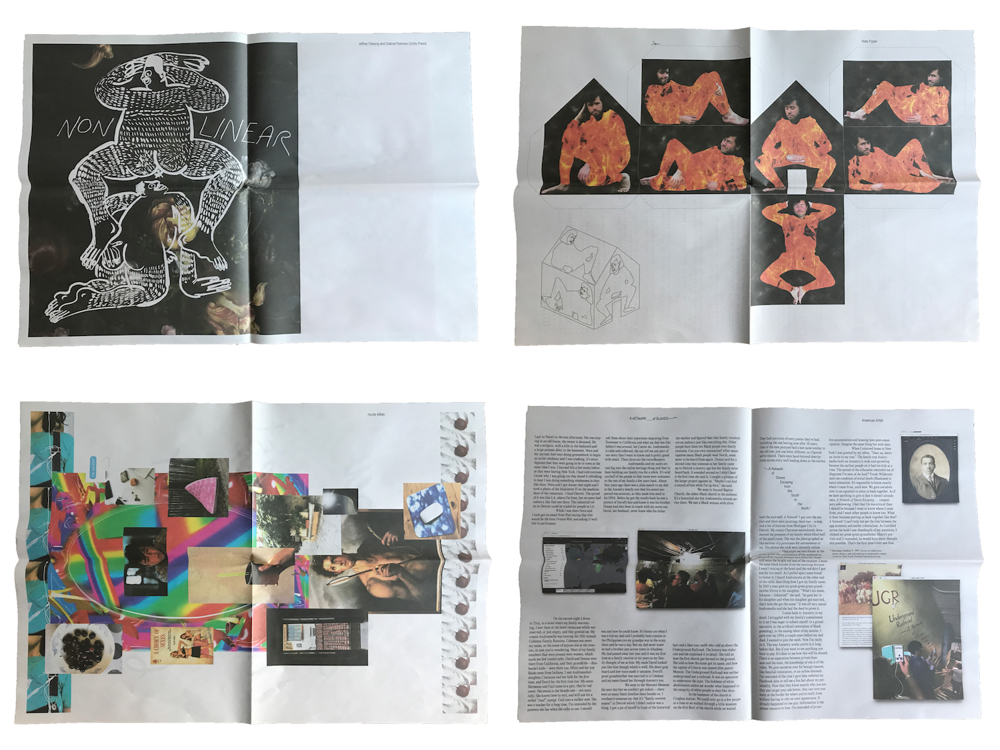

QUEER.ARCHIVE.WORK is an urgent act of publishing that’s radical, messy, and future-looking. It’s a signal sent out into muddy waters, the start of a speculative practice emerging from (and moving towards) the undercommons—a collective place for subversive artists and writers who reject normative narratives. THIS PUBLICATION IS A LOOSE ASSEMBLING OF QUEER METHODOLOGIES, WITH A PARTICULAR VIEW TOWARDS NETWORK CULTURE, FAILURE, AND REFUTATION. It’s an attempt to move far beyond the printed web. IT’S AN EXPERIMENT IN PUBLISHING AS PRACTICE AS RESISTANCE. Edited by Paul Soulellis in Pawtucket, RI.

ISSUE 1 Top: Unity, Nate Pyper / Bottom: nicole killian, American Artist